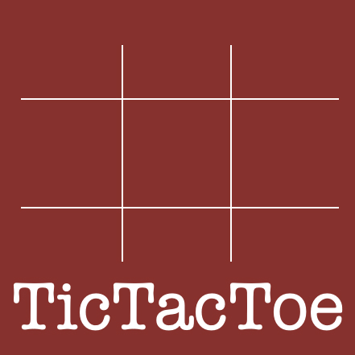

|
The Java HandbookThe Java Handbook is one of my oldest projects, and is meant to be used while coding in Java. The idea is that as I learn the language, I add pages to the program as a form of note taking. That way when I'm coding, I have this program open to easily reference the syntax and usage of a function. Since its creation, I have continuously added to the program and still update it to this day. Read More |
 |
The Python HandbookThe Python Handbook is equivalent to the Java Handbook, but for Python. I find it very nice to have programs like this that give me quick refreshers on syntax and modules. The Python Handbook is in it's infancy stages; there is still alot more to add as I become more comfortable with the Python Language. Read More |
 |
HTML and CSS DesignThis website was created out of boredom from being finished exams and realizing that I had nothing to do. I set off to learn something new by starting a project with the intention of challenging myself. In trying to find something to create that was different from other projects I've done, I realized that I had amassed a folder full of finished projects that I wasn't doing anything with. I figured that it was time to publish some of my best works, and this website is the result. Read More |
|  | LAN TicTacToeLAN TicTacToe is a minigame I created in Java that features multiplayer hosting and connecting via the Java Socket Server class. This program was my first dive into simple networking. The app allows the user to host a game or connect to one as a client over a Local Area Network. After opening a socket with which to communicate, the client and host will essentially send and receive messeages that dictate every move made on the gameboard. Once someone wins, the entire board is reset for rematches. This app is mainly built using the JSwing and ServerSocket classes. JSwing displays the visiual GUI components, while the socket server communicates information between host and client. A gameloop manages the updating of the JSwing components, while the servers are handled by threading for efficiency. The communication between host and client is handled exactly as though this were an instant messaging app. Whenever a player places an x or an o, a message is sent to the opponent that tells them what square was selected. Whenever a new x or o is placed, the game checks for a winner by comparing what is written on each square. Read Less |